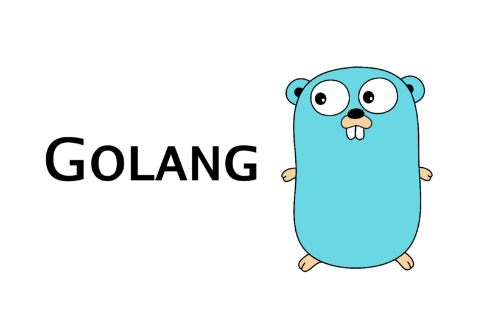

Golang 视频教程¶

目的¶
通过连载短视频和文章的形式帮助有一定其他语言编程基础的人快速学习和入门 Golang。 内容包括 Golang 基础、内置库、web 开发、并发编程等，均来自笔者日常学习和开发经验总结。 教程中会有一些和 Python 等语言特性的对比，方便读者理解。希望教程有如下特色：
- 每一小节均包含视频和文章，演示笔者日常开发的工作流（当然未必是最佳方式，读者朋友可以分享下自己的开发经验）
- 全部代码视频中现场编写，避免教科书式枯燥讲解代码
- 主次分明，快速上手，主要分享日常业务开发中最常用的特性
- 结合实战，笔者自己边踩坑边总结业务开发中遇到的一些痛点和解决方案。比如如何做单测、代码如何分层、如何排查性能问题等
- 最佳实践。总结业务开发中一些好的实践分享出来，贴地气
主要面向有一定开发经验的开发者，不会涉及到一些非常具体和细节的问题。 比如如何下载 IDE，如何导出环境变量等， 编程新手可以先补一补开发基础。本小书会涉及到以下内容，将会长期不间断更新文章和小视频（除非笔者又换工作学习别的技术栈了）:
- go 基础: 快速上手了解 golang 语法基础并上手开发。go 语法简洁，没有那么多语法糖，比其他语言更容易上手，尤其是学过c语言
- go 内置库：熟悉常见内置库的使用方式，增加开发效率
- go 踩坑: 笔者日常使用过程中碰到的一些坑，或者一些新手经常会犯的错误，防止大家踩坑
- go web 开发：包含常用的 go web 框架，web 开发常用的第三方库(http/mysql/redis/kafka等)
- go 最佳实践: 比如代码组织，单元测试，性能测试，工程实践等
- go 高级特性: go 的一些高级语法特性
- go 并发编程: go 的一大卖点，学习如何实现高性能网络后端
- 开发工作流(vim/tmux等)。当然只是笔者自己的工作流，笔者一般会向周围的同事学习更高效的方式，你也可以留言你觉得更好的开发方式。
您可以在以下地址阅读：
如何快速上手新语言¶
笔者的经验就是『学以致用』，如果光学不练，很快就会忘记。学一门新语言的最好方式就是在熟悉了基本语法以后， 通过大量的编码和项目练习来熟悉它。期间你还需要频繁借助文档/搜索引擎等工具，边写边查，很快就可以上手。 之后再去考虑一些具体的语言细节和深入的特性，
新语言学习十步法，对于很多工程上使用的语言来说学习方式都比较类似：
- 1.安装并且搭建开发环境
- 2.基础类型和复合类型。基础数据类型(数值类型，字符串）和复合类型(map/set/list)
- 3.过程式编程，控制流语句。判断、循环、选择
- 4.如何使用函数。定义方式，传值和返回值。
- 5.面向对象编程。类和实例，数据和方法，组合and继承，接口等概念
- 6.内置库（文件、网络、时间、日志等）
- 7.找一个广泛使用的第三方库开始写（抄）项目，比如使用 golang 的 gin web 框架重构你们的 restful 应用
- 8.边写边查，大量练习。常用代码片段总结成文档。比如 golang 里边各种转换，你可以建立一个代码仓库专门用来记录笔记和代码片段，在你开发的时候快速查阅会非常方便
- 9.第三方库快速编写 demo 代码。从 github 搜索关键词。web 框架/redis/mysql/kafka 等第三方库
- 10.最佳实践：遇到的坑；代码分层；单元测试；静态检查。分享与输出（费曼学习法）
总结起来就是：
- 多写多练。光看书是学不会编程的，练习到手熟。书上的例子自己尝试编写和实现，千万不要只看不写
- 照葫芦画瓢，一开始学会模仿别人的写法。看源码，学习优秀的设计和写法
- 做项目，总结，输出。巩固所学知识，技术分享和输出。费曼学习法，会加深的理解层次和记忆效果
工具¶
笔者使用 when-changed 来监控文件变动并且执行 go 代码，这样你可以边写代码，保存后自动运行观察结果， 在写代码验证你的想法的时候会比较方便，视频里笔者会详细演示。
pip install when-changed # 监控当前文件夹变动并且执行命令 when-changed -v -r -1 -s ./ go run main.go # 笔者喜欢自己 alias 一个快捷命令放到 zshrc/bashrc 里，比如 alias go_monitor_run="when-changed -r -v -1 . go run " # 这样就可以直接执行如下命令，修改完之后自动执行代码看效果啦 go_monitor_run main.go
本电子书制作和写作方式¶
使用 mkdocs 和 markdown 构建，使用 Python-Markdown-Math 完成数学公式。 markdown 语法参考：http://xianbai.me/learn-md/article/about/readme.html
安装依赖：
pip install mkdocs # 制作电子书, http://markdown-docs-zh.readthedocs.io/zh_CN/latest/ # https://stackoverflow.com/questions/27882261/mkdocs-and-mathjax/31874157 pip install https://github.com/mitya57/python-markdown-math/archive/master.zip # 或者直接 pip install -r requirements.txt # 如果你 fork 了本项目，可以定期拉取主仓库的代码来获取更新，目前还在不断更新相关章节
你可以 clone 本项目后在本地编写和查看电子书：
mkdocs serve # 修改自动更新，浏览器打开 http://localhost:8000 访问 # 数学公式参考 https://www.zybuluo.com/codeep/note/163962 mkdocs gh-deploy # 部署到自己的 github pages
B 站地址(连载中)¶
- 学 Golang 涨工资系列，你的第一个 Golang 代码
- 学 golang 涨工资系列，聊聊 Go 的基础类型
- 学 golang 涨工资系列，快速入门 go 数组与切片
- 学 golang涨工资系列，golang 映射
- 学 golang 涨工资系列，go 流程控制
- 学 golang 涨工资系列，go 函数初探
知乎专栏¶
- 学 Golang 涨工资系列，你的第一个 Go 程序[视频]
- 学 golang 涨工资系列，聊聊 Go 的基础类型
- 学 Golang 涨工资系列，Golang 数组和切片
- 学 Golang 涨工资系列，Go map映射
- 学 golang 涨工资系列，go 流程控制[视频]
勘误¶
本系列均来自笔者日常学习和工作总结，疏漏之处在所难免，如果文章或者视频有误，您可以到本项目 github 仓库或者文章评论区指出，欢迎批评指正。 笔者会认真对待并且修复错误。